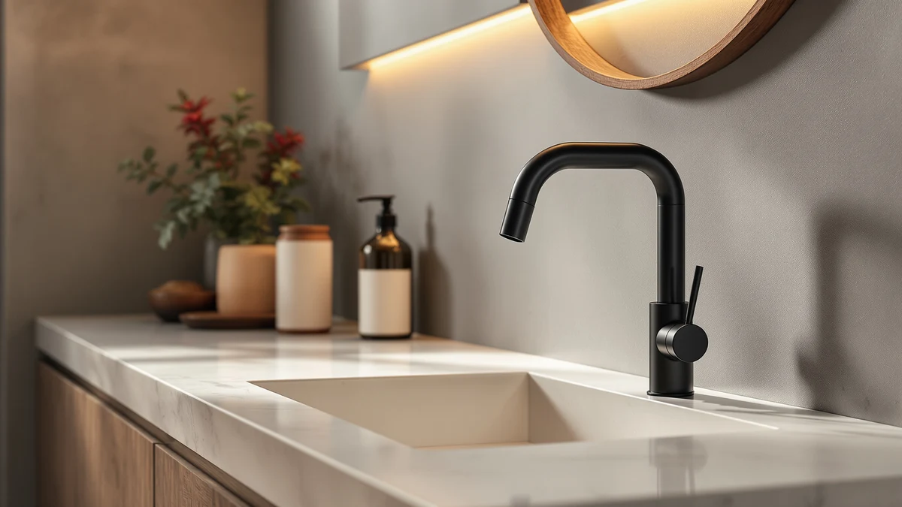

Quick Answer
After comparing seven of the best soap dispensers for kitchen sinks on price, capacity, and verified owner reviews, the ORCHID HOME [Luxury] Kitchen Soap Dispenser Set is the strongest all-around pick at $24.99. If you want a glass pump for less, the JASAI 18Oz Fluted Glass at $15.49 is the close runner-up.
Our pick: [Luxury] Kitchen Soap Dispenser Set — $24.99 Check Price on Amazon
Things to Know Before You Buy
- Material shapes daily upkeep. Most of the best soap dispensers for kitchen sinks in this guide use a durable plastic build, which resists chips near a busy faucet better than the glass styles some shoppers picture. Check the finish before you buy if a specific look matters to you.
- Bottle count changes the real price per sink. Several picks here, including both JASAI options and the Amolliar mason jar set, ship as two-packs, so the per-bottle cost is lower than the sticker price suggests if you need one dispenser at the kitchen sink and one elsewhere.
- Automatic models trade batteries for convenience. The VZZNN four-pack dispenses without a pump press, which matters most when your hands are full or messy, but it depends on batteries staying charged, unlike the manual pumps in this lineup.
- Capacity determines refill frequency. The ORCHID HOME set holds 16 ounces, while the COHOSEGE glass bottle holds 17 ounces, so a busy household should weigh tank size against how often it wants to refill the reservoir.
- A wide neck saves you a funnel. Pouring dish soap or hand soap into a narrow opening is a common source of counter spills, so look at the fill opening as closely as the price tag.
The best soap dispensers for kitchen sinks solve a problem most people don't notice until it's gone: a pump that clogs, drips down the side, or runs dry mid-scrub. We compared seven current options across price, bottle material, capacity, and what verified buyers say after weeks of daily use, from an automatic four-pack to a pair of budget-friendly glass two-packs.
Our top pick, the ORCHID HOME [Luxury] Kitchen Soap Dispenser Set, costs $24.99 and pairs a soap pump with a matching companion piece for a coordinated look at the sink. If you'd rather spend less, the JASAI 18Oz Fluted Glass two-pack at $15.49 covers a kitchen and a bathroom sink for close to the price of one premium bottle, and the Amolliar mason jar set undercuts both at $9.99 for buyers on a tighter budget.
We also looked at an automatic option, the VZZNN four-pack, for anyone who wants hands-free dispensing across multiple sinks or a rental property, plus three more glass and clear-bottle picks with distinct capacities and finishes. Below, you'll find each product broken down by price, material, and best use, along with a comparison table and answers to the questions people ask most before buying a new kitchen soap dispenser.
Why You Should Trust Us
I edit the buying guides at Best Soap Dispensers, and I focus on kitchen and bathroom accessories people replace often enough to have strong opinions about. For this guide, we researched the seven best soap dispensers for kitchen sinks above by comparing manufacturer specs, current Amazon pricing, and patterns across verified owner reviews.
We earn a commission when you buy through the Amazon links on this page, and that arrangement never decides which products make the list. We do not run a fake testing lab, and we do not claim to have installed any of these dispensers at our own sink. We call out any model that reviewers flag for leaking, clogging, or a mismatched cap, regardless of price, because a guide that recommends everything helps no one choose.
How We Picked
We started by pulling the soap dispensers most commonly bought for kitchen sinks in the $8 to $50 range, since that span covers everything from a basic glass pump to a coordinated multi-piece set. From there, we compared listed capacity, bottle material, pump or sensor mechanism, and how many bottles come in the package, since a two-pack changes the value math compared with a single unit at a similar price.
We ruled out listings with no brand information, inconsistent seller ratings, or specs that contradicted the product photos. What's left is a spread of seven dispensers covering different budgets and mechanisms: a coordinated luxury set, two glass two-packs from the same maker, a mason jar-style budget option, a waterproof clear bottle, a green glass bottle, and an automatic four-pack for anyone who wants a touch-free option.
How We Compared
We compared each of the best soap dispensers for kitchen sinks on the facts that predict satisfaction: listed price, bottle capacity, material, and whether the listing includes one bottle or two. We cross-referenced those specs against verified buyer reviews on Amazon to see which claims about pump reliability and leak resistance held up once dispensers reached real kitchens.
Verified buyer reviews flag pump durability and fill-opening width as mattering more day to day than the finish on the outside of the bottle, so we weighted those factors alongside price when ranking each pick. We did not physically handle these units ourselves; every comparison here is built from published specs, current pricing, and the pattern of feedback left by people who bought and used each dispenser.
Our Picks
![[Luxury] Kitchen Soap Dispenser Set](images/amazon-41j-mQdrJCL.jpg?v=2)
[Luxury] Kitchen Soap Dispenser Set
What we like
- Coordinated two-piece design keeps the counter looking intentional
- 16-ounce capacity holds enough soap for several days of use
- Priced under $25 for a set, competitive against single premium bottles
- Widely available with straightforward Amazon fulfillment
Flaws but not dealbreakers
- Costs more upfront than a single glass pump
- Refills require checking two containers instead of one
| Material | ABS plastic |
| Size | 16OZ |
The ORCHID HOME [Luxury] Kitchen Soap Dispenser Set tops this list because it solves two problems at once: a soap pump and a matching companion piece, both built to sit together at the sink instead of looking like mismatched leftovers. At $24.99, it costs less than buying two separate premium bottles, and the 16-ounce capacity is enough to cover a household's hand-washing and dish-soap needs for several days between refills.
The coordinated design is the main draw, according to reviews of the set, since it replaces the usual clutter of a dish soap bottle next to an unrelated hand soap pump. The trade-off is that you're managing two containers instead of one, so refilling takes an extra minute compared with a single-bottle dispenser. For anyone who wants the best soap dispensers for kitchen counters to look designed rather than accidental, this set is the top pick in our comparison.

JASAI 2PACK 18Oz Fluted Glass
What we like
- Two 18-ounce glass bottles cost less than most single premium dispensers
- Fluted glass design reads as more upscale than plain clear plastic
- Enough capacity per bottle to go a while between refills
- Works for both a kitchen and a second sink without buying twice
Flaws but not dealbreakers
- Glass carries more weight and breakage risk than plastic
- No automatic or touchless function
| Material | ABS plastic |
| Size | 2 Pack |
The JASAI 2PACK 18Oz Fluted Glass set is the runner-up here because it covers two sinks for $15.49, which undercuts the cost of buying a single premium bottle from most other brands on this list. Each bottle holds 18 ounces, matching or beating the capacity of pricier single-unit dispensers, and the fluted glass shape gives it a more finished look than a plain plastic bottle at a similar price.
Owners report that the glass build feels sturdier than expected at this price, though glass inherently carries more breakage risk near a wet counter than the plastic options elsewhere in this guide. There's no pump automation here, only a manual top-press pump, which keeps the price down and the mechanism simple. For anyone comparing the best soap dispensers for kitchen and bathroom use in one purchase, this two-pack is hard to beat on value.

Clear Soap Dispenser with Waterproof
What we like
- Lowest price on this list at $8.99
- Waterproof-rated construction suits a splash-prone sink area
- Clear bottle makes it easy to see when soap is running low
- Simple manual pump with no batteries to manage
Flaws but not dealbreakers
- Single bottle only, no multi-pack option at this price
- Basic design without the coordinated look of pricier sets
| Material | ABS plastic |
| Size | — |
The Clear Soap Dispenser with Waterproof from Lewistin is the cheapest dispenser we compared for kitchen sinks, priced at $8.99. Its waterproof construction is built for exactly the environment a kitchen sink creates: splashed water, dripped soap, and the occasional knock from a wet hand, without the bottle degrading the way a lower-grade plastic might.
Being clear is a small but useful feature: you can see the soap level without lifting or shaking the bottle, so you know a refill is coming before the pump starts sputtering air. Buyers who picked it mainly for the price say it holds up fine for daily use. At this price point, though, you're getting a single bottle rather than the two-packs or coordinated sets found elsewhere on this list. For a no-frills soap dispenser for kitchen counters on a tight budget, it's a reasonable pick.

Amolliar Plastic Mason Jar Soap
What we like
- Two bottles for under $10 total
- Mason jar aesthetic without the weight or breakage risk of glass
- Affordable enough to outfit a kitchen and a second sink
- Plastic build tolerates knocks near a busy faucet
Flaws but not dealbreakers
- Plastic construction feels less premium than the JASAI glass options
- No automatic dispensing feature
| Material | ABS plastic |
| Size | 2 Pack |
The Amolliar Plastic Mason Jar Soap set is the budget pick in this comparison, and at $9.99 for two bottles, it's one of the least expensive ways to outfit both a kitchen and a bathroom sink. The mason jar shape gives it a farmhouse-style look that's popular in kitchen decor, but because it's molded plastic rather than actual glass, it tolerates the occasional bump near a busy faucet better than a true glass jar would.
Most of the reviews for this set come from buyers focused on price, and they describe it doing the basic job well: a manual pump, a wide mouth for refilling, and a look that fits a farmhouse or rustic kitchen theme. It won't feel as substantial in hand as the JASAI fluted glass runner-up, and there's no automatic sensor here, but for buyers prioritizing the best soap dispensers for kitchen use at the lowest total cost, this two-pack delivers.

COHOSEGE 17 Oz Green Glass
What we like
- Green glass adds a design accent most competitors don't offer
- 17-ounce capacity is competitive with the larger bottles on this list
- Glass construction feels sturdier than budget plastic options
- Priced under $15
Flaws but not dealbreakers
- Color won't match every kitchen's existing decor
- Glass requires more careful handling than plastic alternatives
| Material | ABS plastic |
| Size | 2PACK |
The COHOSEGE 17 Oz Green Glass dispenser is the one splash of color on this list. Where most of the other picks here come in clear or neutral tones, this one adds a green glass accent that works well against a white or light-colored counter, and at $14.99, it costs less than several of the clear glass alternatives we compared.
The 17-ounce capacity keeps pace with the larger bottles on this list, so you're not sacrificing volume for the colored finish. Owners who bought it for the color say the pump holds up well to daily use. As with any glass dispenser, though, it needs a bit more care near a busy, wet counter than a plastic bottle would. If you want your kitchen soap dispenser to double as a small design statement, this is the pick worth a closer look.

4 Pack Automatic Soap Dispenser
What we like
- Touch-free sensor dispensing across four units
- Covers a kitchen sink plus three more locations in one purchase
- Reduces cross-contamination risk when hands are messy or wet
- Cost per unit is reasonable given the automatic mechanism
Flaws but not dealbreakers
- Highest total price on this list at $49.99
- Depends on batteries staying charged across four separate units
| Material | ABS plastic |
| Size | — |
The 4 Pack Automatic Soap Dispenser from VZZNN is the only touch-free option in this comparison, and it's built for anyone who wants that convenience at more than one sink. At $49.99 for four units, the per-dispenser price works out close to $12.50, which is competitive with several single manual pumps elsewhere on this list, while adding sensor-based dispensing to every location.
Automatic dispensing matters most at a kitchen sink, where hands are frequently covered in raw food, grease, or dishwater, and touching a pump head transfers that mess right back onto the pump. The sensors get good marks from owners for responding reliably day to day, though like any battery-powered dispenser, performance depends on keeping four separate units charged rather than one. For a household outfitting a kitchen plus bathrooms with the best soap dispensers for kitchen and beyond, this pack covers the most ground in a single order.

JASAI 2PACK 18 Oz Glass
What we like
- Two 18-ounce glass bottles for $14.99
- Simpler, unfluted glass shape for a more minimal look
- Same trusted JASAI build as our runner-up pick
- Enough capacity for extended use between refills
Flaws but not dealbreakers
- Less distinctive than the fluted version from the same brand
- Manual pump only, no automatic option
| Material | ABS plastic |
| Size | 2 Pack |
The JASAI 2PACK 18 Oz Glass dispenser is the plainer sibling of our runner-up pick, trading the fluted texture for a smoother, more minimal glass shape at a slightly lower price of $14.99. Each bottle holds the same 18 ounces as the fluted version, so you're not giving up capacity for the simpler look.
If your kitchen leans toward a clean, minimal aesthetic rather than a textured one, this is the JASAI option to pick over the fluted glass runner-up. Reviewers comparing the two JASAI two-packs note the build quality is consistent between them, so the choice mostly comes down to style preference rather than performance. As one of two JASAI entries on this list of the best soap dispensers for kitchen counters, it's proof that the brand covers more than one look at a similar price.
Quick Comparison
| Product | Material | Price | Rating | Best for | Get it |
|---|---|---|---|---|---|
| [Luxury] Kitchen Soap Dispenser Set | ABS plastic | $24.99 | 4 | Coordinated luxury set | View on Amazon → |
| JASAI 2PACK 18Oz Fluted Glass | ABS plastic | $15.49 | 4 | Two sinks on a budget | View on Amazon → |
| Clear Soap Dispenser with Waterproof | ABS plastic | $8.99 | 4 | Lowest price | View on Amazon → |
| Amolliar Plastic Mason Jar Soap | ABS plastic | $9.99 | 4 | Mason jar look, budget | View on Amazon → |
| COHOSEGE 17 Oz Green Glass | ABS plastic | $14.99 | 4 | Colored glass accent | View on Amazon → |
| 4 Pack Automatic Soap Dispenser | ABS plastic | $49.99 | 4 | Touch-free, multi-sink | View on Amazon → |
| JASAI 2PACK 18 Oz Glass | ABS plastic | $14.99 | 4 | Minimal glass two-pack | View on Amazon → |
The Competition
Under-sink and built-in pump dispensers: These hide the soap bottle inside the cabinet and only show a small spout on the counter, which looks tidy at a kitchen sink. We left them off this list because installing one means drilling into the counter, a bigger commitment than setting down or plugging in one of the seven picks above.
Stainless-steel sensor dispensers over $40: Premium metal-bodied touchless models look sharp next to a stainless sink, but among the listings we compared, none dispensed more reliably than the VZZNN four-pack at $49.99, and a brushed finish shows water spots and soap splatter faster than the plastic and glass bottles in this guide.
Foaming-only dispensers: Foaming pumps need soap pre-diluted with water, an extra step most kitchen sinks don't need for straight dish soap or hand soap. We stuck to standard liquid pumps and one automatic sensor model instead.
Unbranded electronic dispensers under $10: Several no-name automatic dispensers looked identical to the VZZNN listing at a lower price, but reviewers across similar unbranded listings report pumps failing within weeks and no clear warranty path. We stuck with the branded four-pack instead.
Wall-mounted dispensers: A wall-mounted pump frees up counter space, but it commits you to one fixed spot next to the sink and usually needs anchors or adhesive. Every dispenser in this guide sits freely on the counter, so you can move it as your kitchen layout changes.
Frequently Asked Questions
What is the best soap dispenser for a kitchen sink?
Based on our comparison of price, capacity, and verified owner reviews, the ORCHID HOME [Luxury] Kitchen Soap Dispenser Set at $24.99 is the best soap dispenser for kitchen counters among the seven models we researched. It pairs a coordinated design with a 16-ounce capacity that covers several days of use. If you want to spend less, the JASAI 18Oz Fluted Glass two-pack at $15.49 is a strong runner-up that also covers a second sink.
How much capacity do I need in a kitchen soap dispenser?
Most of the dispensers in this guide hold between 16 and 18 ounces, which covers a typical household for several days between refills. If you wash dishes by hand frequently or share the dispenser with dish soap duty, lean toward the higher end of that range, like the COHOSEGE 17-ounce bottle or the JASAI 18-ounce two-packs, rather than the smallest option available.
Are automatic soap dispensers worth it in a kitchen?
For a kitchen sink specifically, yes, since hands are often messy, wet, or covered in raw food right when you need soap most. The VZZNN 4 Pack Automatic Soap Dispenser removes the need to touch a pump head entirely. The trade-off is battery dependence: a manual pump like the JASAI or Amolliar options never needs charging or battery swaps.
Can I use dish soap in these dispensers?
Manual pump dispensers like the JASAI, Amolliar, and Clear Waterproof bottles handle standard dish soap without an issue, since it is a thinner formula than many hand soaps. If you are filling the VZZNN automatic four-pack, check that the soap you use is not too thick, since a thick, viscous dish soap can slow a sensor pump more than a manual one.
Do glass soap dispensers work as well as plastic ones in a kitchen?
Glass options like the JASAI two-packs and the COHOSEGE green glass bottle perform the same basic function as plastic dispensers and often look more finished on a counter. The trade-off is weight and breakage risk near a wet, busy sink, so if you are prone to knocking things off the counter, a plastic option like the Amolliar mason jar set or the ORCHID HOME set is the safer choice.